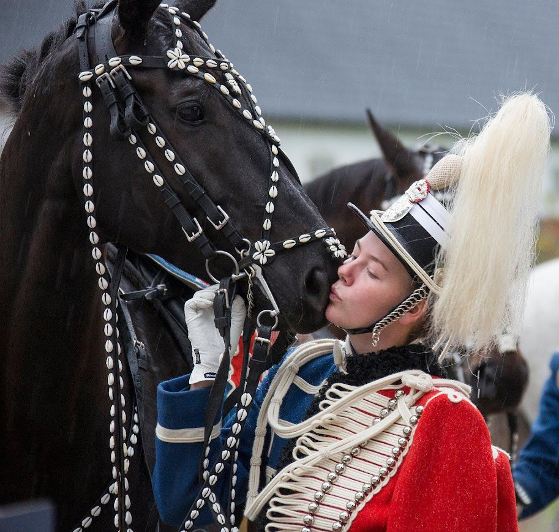
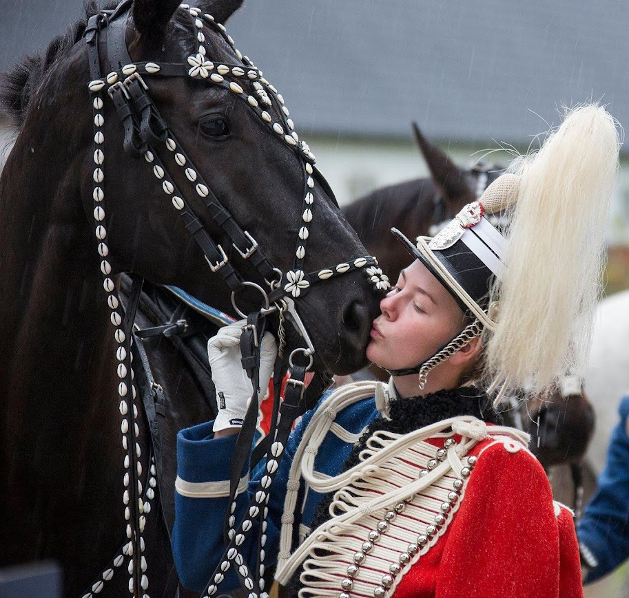

Hvem er jeg?
Kreativ, Teknisk dygtig og Adaptiv
 

Designing with purpose, creativity, and human connection.
Jeg er multimediedesigner med en stærk passion for frontend development og UI-design. Udover min tekniske interesse er jeg også en kreativ sjæl med mange hobbyprojekter som bogbinding, digital kunst og cosplay. Tidligere var jeg en del af Gardehusarregimentet, drevet af min passion for heste, som jeg har redet i 16 år og haft egne heste i 10 af dem. Nu nyder jeg livet med min hund Aelin, en charmerende Welsh Corgi, mens jeg fortsat udforsker både den digitale og kreative verden.
Jeg er:
Kreativ

Wireframing og udforskning af versioner
Under wireframing- og udforskningsfasen af et projekt kommer min nysgerrighed og kreativitet virkelig til udtryk. Denne fase handler ikke kun om at visualisere strukturen, men også om at eksperimentere med forskellige løsninger og perspektiver. Min kreativitet spiller en afgørende rolle her, da det åbner op for nye idéer og muligheder, som kan føre til mere intuitive og brugervenlige designs. Det er vigtigt at være åben og nysgerrig, i stedet for at låse sig fast på den første idé, man får.
Design af custom SVG'er
Min kreativitet kommer til udtryk, når jeg designer skræddersyede SVG-grafikker til brugergrænseflader, hvor standardløsninger ikke passer til det ønskede visuelle udtryk. Ved at skabe unikke grafiske elementer kan jeg sikre et mere personligt og æstetisk look, der styrker designet. Dette giver mulighed for at forene funktionalitet og æstetik, så brugeroplevelsen både bliver visuelt tiltalende og intuitiv.
Jeg er:
Teknisk dygtig
Vejr App med API
Til venstre vises en vejrapp, jeg har udviklet ved hjælp af HTML, CSS og JavaScript. I dette projekt integrerede jeg en ekstern API til at hente og præsentere vejroplysninger i realtid direkte i HTML-strukturen. Appen er fuldt dynamisk og opbygget gennem DOM-manipulation, hvilket gør det muligt at opdatere og vise data uden at genindlæse siden. Den oprindelige HTML-fil indeholder kun inputfeltet og søgeknappen, mens al øvrig indhold genereres og håndteres gennem JavaScript baseret på brugerens forespørgsler.
Link til CodepenMenu med microinteractions
Her ses en menu til en mobil applikation, som jeg har udviklet med særlig vægt på microinteractions for at forbedre brugeroplevelsen. Et af de centrale elementer er plus-ikonet, der smidigt transformeres til et X ved interaktion, hvilket skaber en intuitiv og visuel feedback. Derudover er der implementeret animationer ved markering af menupunkter, så brugeren tydeligt kan se, hvilket felt der er aktiveret. Disse små, men effektfulde interaktioner bidrager til en mere dynamisk og engagerende brugerflade.
Link til CodepenJeg er:
Adaptiv
Nesting
I videoen til venstre vises en image slider med en ønskelistefunktion. Funktionen er implementeret ved, at jeg ved hjælp af JavaScript kloner kortet, når det tilføjes til ønskelisten, og placerer det i listen. For at kortet skulle passe ind i det nye layout på ønskelisten, har jeg justeret dets udseende ved hjælp af nesting i CSS, så det automatisk tilpasses det nye miljø, når det flyttes fra slideren.

Container queries
Container queries er en spændende ny CSS-teknologi, som jeg har implementeret i et af mine seneste projekter for at forbedre responsiviteten af enkelte komponenter på siden. De gør det muligt for komponenter at tilpasse sig deres nærmeste container i stedet for hele skærmen.